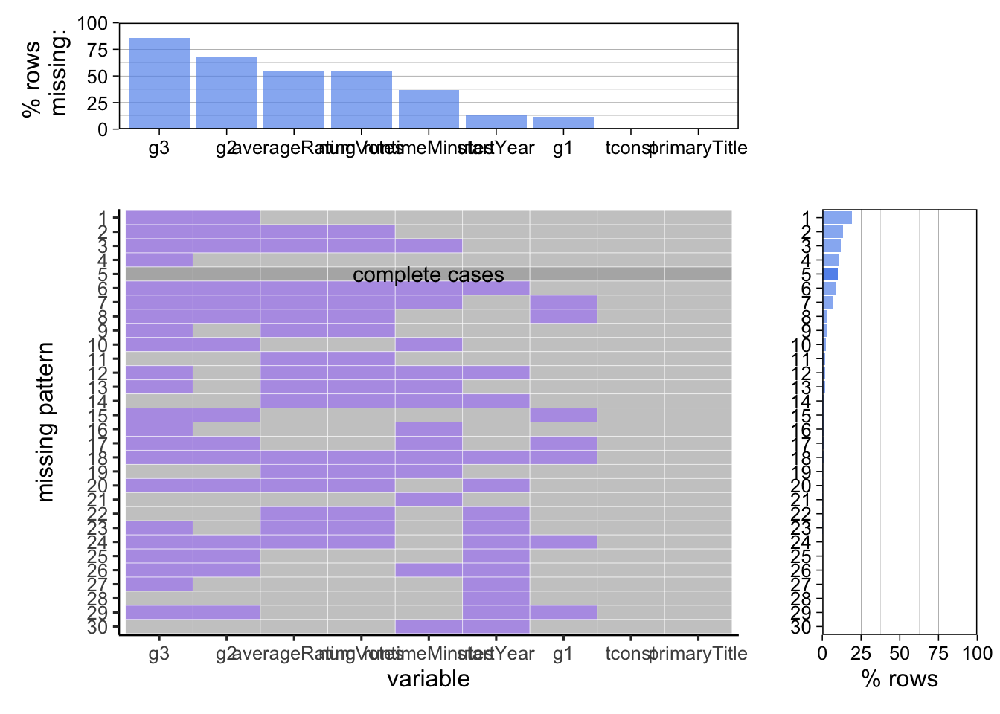
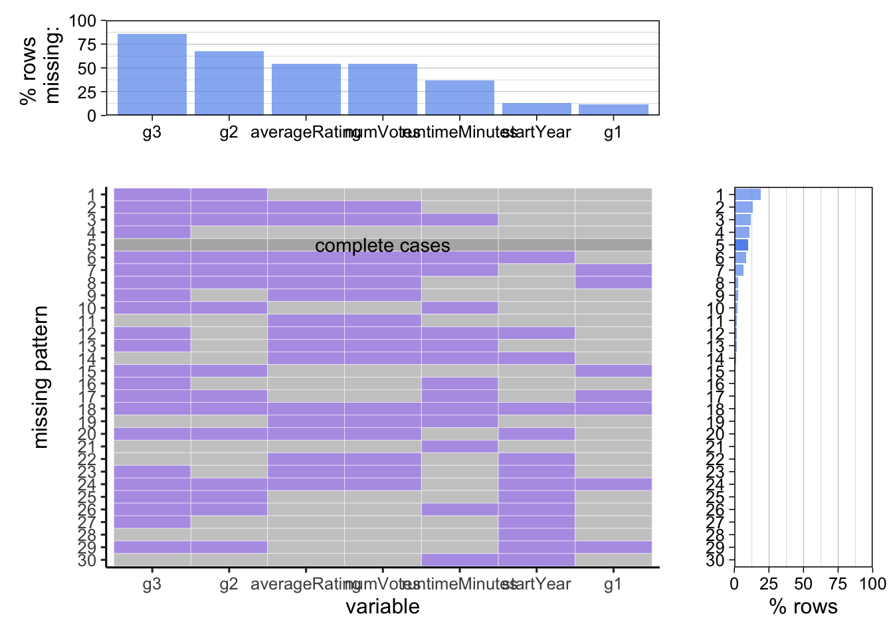

Chapter 4 Missing values
4.1 Missing values for imdb_rating data

## # A tibble: 606,198 × 9
## tconst primaryTitle startYear runtimeMinutes g1 g2 g3 averageRating
## <chr> <chr> <date> <dbl> <chr> <chr> <chr> <dbl>
## 1 tt000… Bohemios 1905-01-01 100 <NA> <NA> <NA> 4.5
## 2 tt000… The Story o… 1906-01-01 70 Acti… Adve… Biog… 6
## 3 tt000… The Prodiga… 1907-01-01 90 Drama <NA> <NA> 4.6
## 4 tt000… Robbery Und… 1907-01-01 NA Drama <NA> <NA> 4.5
## 5 tt000… Hamlet 1908-01-01 NA Drama <NA> <NA> 3.8
## 6 tt000… Don Quijote 1908-01-01 NA Drama <NA> <NA> 4.9
## 7 tt000… The Fairylo… 1908-01-01 120 Adve… Fant… <NA> 5.3
## 8 tt000… El pastorci… 1908-01-01 NA Drama <NA> <NA> 6.2
## 9 tt000… Andreas Hof… 1909-01-01 NA Drama <NA> <NA> 4.6
## 10 tt000… La bocana d… 1909-01-01 NA <NA> <NA> <NA> NA
## # … with 606,188 more rows, and 1 more variable: numVotes <dbl>